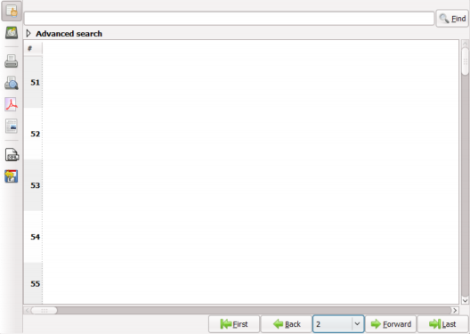

{application}


|
Application views, buttons and menus |
 |
Note that the icons according to the used theme/skin. |
| |
Note that the texts may vary according to the selected language. |
Almost any operation can be done in 2 ways: by using the assigned button or by choosing from the context menu that will pop-up when you right click on an item or in a view.
The main view windows look like this:

You can see the "First", "Back", "Next", "Last" buttons on the buttom, and also a combobox that allows you to directly jump to a given page. This is needed because, in order to minimize the network traffic and provide fast applications, all the data in a view is paged in 50-items page. So, if you have a view containing 10 000 items, you will have to jump from one page to another. In the PDF quick reports, all the data will be visible (though is not recommended to export this amount of data).
| |
In order to edit or view an item, you must double click on it. |
| |
In order to perform any other operation an item, you must right click on a item or in the "white" area in the view.
A menu like: will be displayed. |
 |
The displayed menu items may vary according to your user level. |
|
Data from these views is draggable to another view that accepts the same data type or to the "Personal documents" zone or "Clipboard" |
Left panel buttons description:
| Show the archive view (if enabled). | |
| Show the current view (return from archive). This should be used in conjuction with the archive button. | |

|
Print the current view on the server's default printer. |

|
Generate a quick report and show it in print preview. |
| Export this view as a PDF document. | |
| Export this view as a RTF document. | |
|
Export this view in XML. The XML format is used for transparent interaction
with other applications (eg.: Excel). Also, it can be used to localy save the data for later importing. |
|
|
Imports data from XML. The structure of the XML must be defined and compatible
with the application. It can import previously exported XML data when using the "XML export button". |
Other forms of views are the drop-down choose-from forms that look like this:
|
Other buttons that you may encounter:
|
Show the advanced search fields (if any). Please note that in order to
activate an advanced search field, you must first check the checkbox
preceeding the filed name. After you're done searching, you must uncheck it. Also, you can choose from varios comparators like "=(equal)", "<=(less or equal)", ">=(greater or equal)" or "<>(not equal)". |
|||

|
You will see these buttons on the buttom of a input form. The first button: export form to XML (for importing at a later time or in another program) The second button: print the form on the server's default printer The third button: save form localy as PDF The fourth button: Save data to the database. The fifth button: Cancel the operation and close the form. |
||
|
You will see these buttons on the buttom of a view in an input form. The first button: print the form view data on the server's default printer The second button: save form view localy as PDF The third button: Add data to the view. The fourth button: Delete data from the view. The Add and Delete operations can be also performed by right clicking in the form view.
|
|||
|
You will see these buttons on the buttom of a view in an input form that accepts only one item. The first button: delete data from the view. The second button: add data to the view. The add and delete operations can be also performed by right clicking in the form view. If the view already contains an item, you must first delete it/remove it from the view.
|
|
You can perform quick searches by entering some text in the search field and pressing the Enter key or the Find button.
You can also perform pattern search using the '%' character. The '%' replaces a letter or a group of letters. Eg. If you want to search for all the data containing 'John' as a field you can search for '%John%' (without the quotes). Then all the results like 'John Smith' and 'Mr. John' will be displayed. |